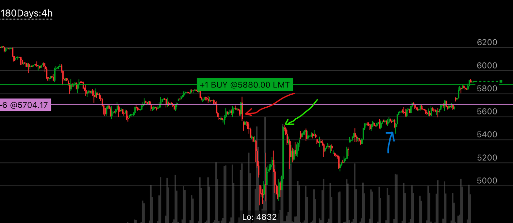

小的加速模式不能作为反转的依据
- 加速的时候，一定要越过原来无法越过的位置，也就是实现跨越
- 如果只是在本范围内加速，很可能不是真实的加速走势
- 如果更大的走势是反向的走势，那么本地的小加速可能没有效果

图示:
- 蓝色箭头是一个小的加速上涨，但是它不能标识一个本地的反转，因为它的模式太小，而且和更大的加速相反。
- 蓝色箭头后面，从5600到5700也是一个小的向上加速，但是仍然无法扭转趋势，因为它处于更大的加速向下反转过程中。

图示:
- 蓝色箭头是一个小的加速上涨，但是它高于5860这个点，并没有跨越前面的范围，所以其实不是一个加速走势。它应该低于5800附近才算

图示:
- 蓝色和红色箭头都是加速向上的走势，但是因为模式太小了，而且没有跨越前面的范围，所以不能是一个真实的加速，它后面仍然继续上涨